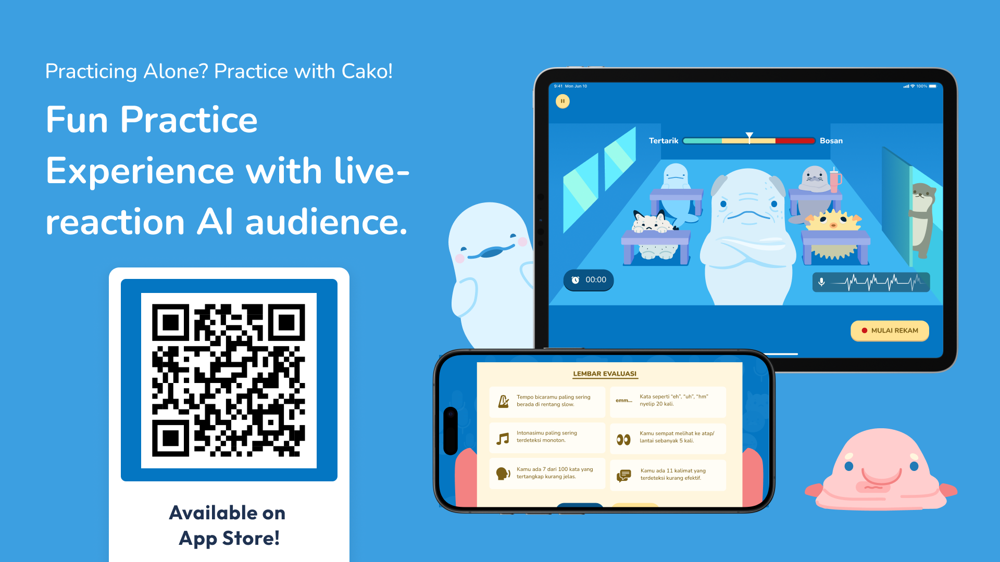

Problem
Students practice presentations without real distractions or
audience feedback, causing delivery issues to go
unnoticed.
Solution
An interactive practice app that simulates live audience
reactions based on delivery aspects (intonation, tempo,
filler words, and eye contact) and distractions, followed by
data-driven delivery evaluation.
My Contribution
- Researched and defined the technical stack for real-time presentation delivery analysis
- Integrated Spice Model to estimate vocal pitch and analyze intonation patterns
- Built delivery scoring logic using Combine to process real-time speech and pitch data
- Implemented Rive Runtime to dynamically update audience reactions based on delivery performance
- Implemented accessibility features including larger text support and differentiate without color alone
Impact
- Helped users identify delivery issues they were previously unaware of
- Improved focus and improvisation under distraction
- Increased confidence and preparedness before real presentation scenarios
- Available in iOS and iPadOS for better experience, can be accessed on App Store